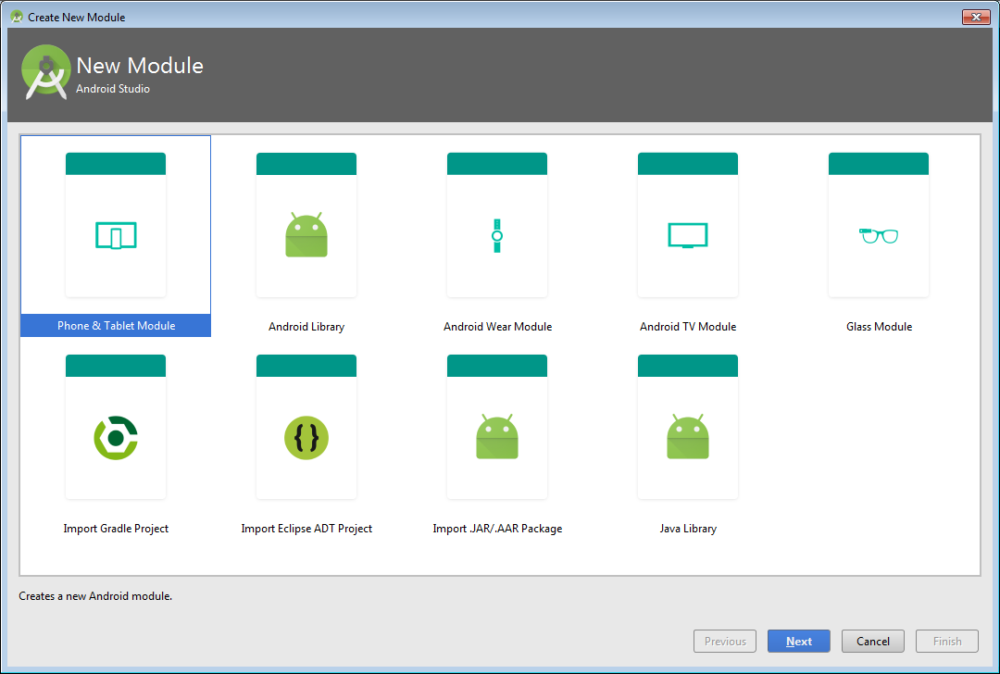

App:
When you create a new project, the default module name is "app".
A module is a collection of source files and build settings that allow you to divide your project into discrete units of functionality. Your project can have one or many modules and one module may use another module as a dependency. Each module can be independently built, tested, and debugged.
Module provides a container for your app's source code, resource files, and app level settings such as the module-level build file and Android Manifest file.
How to add a new module to your project?
Click File > New > New Module.

In the Create New Module window, Android Studio offers the following app modules:
- Phone & Tablet Module
- Android Wear Module
- Android TV Module
- Glass Module
They each provide essential files and some code templates that are appropriate for the corresponding app or device type.